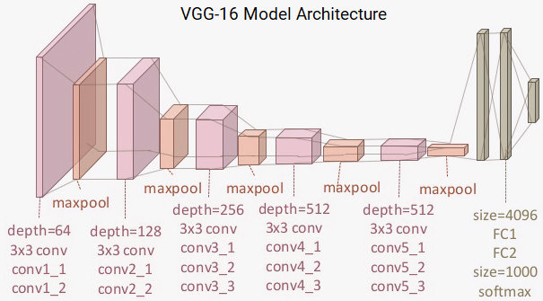
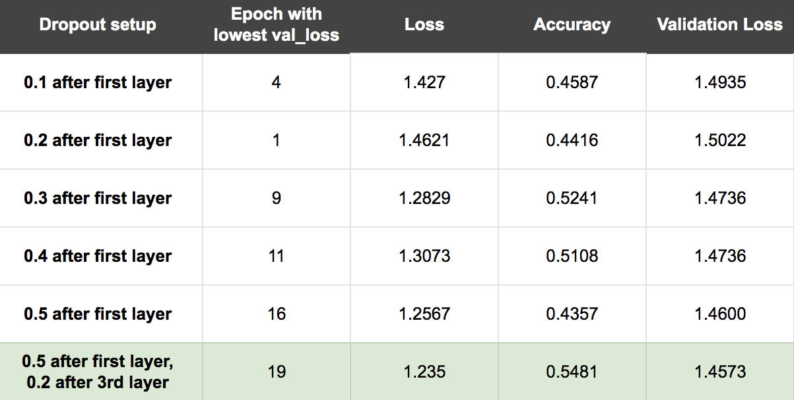

Chitwan Kaudan, Ling Yiu Ku, Raghav Apoorv, Tien T Dinh Fall 2019 | CS 6476 Computer Vision Class Project Georgia Institute of Technology
Abstract
The ability for machines to recognize human emotions has important societal applications ranging from video based sentiment analysis to assisting people with visual impairments. This project aims to extract emotions from video and display a time series visualization of each emotion in real time. To do so, we experiment with two approaches within deep learning: (1) Training the Mini-Xception CNN from scratch and (2) Using VGG-16 to extract features and training our own neural network classifier.
We found the transfer learning model to be our best model with 66.48% overall training accuracy and 46.31% overall test accuracy. Our final application includes our best model and a visualization tool to run live demos.
Figure 1: Application Overview
Introduction
Facial expressions are a crucial form of nonverbal communication and facial emotion classificatiers have a wide range of applications. One such application would be real-time sentiment analysis for the state of the union address. Instead of conduting a typical sentiment analysis that uses NLP on tweets or other direct surveying methods, we can extract emotions from video in real time and display changes in sentiment over time. Another popular application is determining when and what types of ads to serve during a Youtube video so the mood of the ad matches the mood of the content.
Emotion recognition is a heavily researched topic and in recent years deep learning approaches have dominanted the field. Although emotion recognition has improved substantionally with the introduction of deep learning, emotion detection "in the wild" is still an open reserach problem. In our project, we experiment with two existing deep learning approaches and determine which one extends best to detecting emotions over time (e.g. video). What's entirely new about our project is that we add a time component to the output visualization of the emotion classifier. Adding time opens up the possibility of understanding the relative changes in emotions as reactions to some real-world stimulus.
Approach
To build our application, we first trained an emotion detection classifier on image datasets. Our team took 2 approaches to build the emotion detection classifier. We compared and contrasted the accuracies and complexities of each method to determine which will be the best model for our video application. Since we knew computational efficiency was important to our application, we made sure each of the approaches tried to minimize the required compute power in some manner. To extend to video, we pulled frames from a video at a constant rate, apply our pre-trained classifier on each frame and build an output visualization.
Part 1: Training the Image Classifier
The Mini-Xception CNN Approach
Originally proposed by Arriaga in 2018, the mini-xception CNN was designed to be a lightweight model that could run real time emotion classification in hardware constrainted applications such as robotics. Below is the full architecture of mini-xception. The general idea in this approach is to remove the fully connected layers typically found in feature extraction CNNs and replace them with residules modules and depth-wise separable convolutions. Residual modules change the mapping between 2 layers so the new features become the difference between original feature map and desired feature map. Depth-wise separable convolutions reduce computation required in convolving by first preforming convolution separately on each channel and then preforming point-wise convolution across all layers. We used the architecture described in Arriaga's paper as well as this description of how Xceptions work to build the mini-Xception model in Keras.
Figure 2: Mini-Xception Architecture
The Transfer Learning Approach
A popular technique within deep learning is transfer learning which means using a pretrained DNN to build your features represenations and then training a classifier for you own domain. For our pretrained DNN, we used VGG-16, a general purpose object detection network created by the Visual Gemometry Group. We extracted features from our images using the first 13 convolutional layers of VGG-16 and experimented with different classifiers for the emotion recognition task. The extracted features are then used classified into 7 emotion classes using a neural netwok (softmax) classifier.
Figure 3: VGG-16 Architecture

Part 2: Extending to Video
To extend our classification to videos, we built a program that takes every frame of the video, identifies and extracts the region with the face. For face detection, we used the Haar Cascades Frontal Face Detector available on OpenCV. The extracted face is fed the feature extractor, whose output is then fed into the emotion classifier. The emotion classifer returns the probabilities with which it detects each of the 7 emotions. We built a real time visualization using matplotlib that plots these probabilities over time.
Experiments and Design
Experiential Set Up and Evaluation Metrics
In order to fairly compare the accuracies across the 2 approaches, we decided to use the fer2013 dataset (35,887 images) for both methods with 85% of the data (30,504 images) for training/validation and the remaining 15% (5,383 images) for testing. To evaluate the performance of each classifier we decided to compare the normalized confusion matrix of the 7 emotions. As a baseline, we considered what the confusion matrix would look like if our classifier was randomly guessing.
Results
The Mini-Xception Approach
We were able to translate the architecture from the Arriaga into Keras, but we hit a computational limit when we tried to train the mini-Xception on our CPUs. Ultimately, we had to use resources on Google Cloud to train the model on the full FER dataset. The model turned out to be not as computational lightweight to train as we had hoped. However, we did find that evaluating test images was fast enough that we could build a real time visualization.
As suggested in the Arriaga paper, for the hyperparameters we used relu as our activation function and softmax for the final output classification, we use l2 regularization with weight 0.02 for each separable convolution layers. As suggested in the Introduction to Xception article, we used adam optimizer, cross entropy loss and 100 max epochs. The first time we ran the model, we noticed that after some time the model was overfitting where training loss was decreasing but validation loss was nonincreasing. To combat overfitting, we added batch normalization after each convolution layer and used early stopping with patience 20 epochs. At the end, we chose to keep the model with the lowest validation loss because we felt it would preform best on test data.
The test accuracy is 42.46%. Below is the normalized confusion matrix of the best mini_xception model on the test dataset.
Our mini-Xceptron does significantly better than baseline guessing where each class is 0.14. It seems like it's better at detecting happy and neutral than the other emotions. We expected this to a degree since happy and neutral are the 2 most populous classes in the FER dataset.
Transfer Learning Approach
For approach 2, we started off by using the pre-trained VGG-16 model in extracting useful features for classification. These are some features detected in hidden layers of the model (random samples of features from earlier layers to final layers, from left to right).
Then, we replaced the last 3 fully connected softmax layers in the original model used for 1000-class object classification with a generic 5 layer classification DNN. Our first layer had 512 relu activation units, the next had 256 relu units, the next had 128 relu units, the next had 64 relu units and the final one had 7 softmax activation units for our emotion classification. For our loss funciton we selected cross-entropy loss since it's common loss function used in classificaion tasks and for our optimizer we used Adam.
After running 20 epochs, we found that the model is overfitting - our validation accuracy was stagnant but training accuracy kept increasing. We employed different techniques to reduce validation loss of the model:
1. Early stopping condition: to stop training if validation loss doesn't increase after 5 epochs
2. Learning rate reducer: to decrease the learning rate by a factor 0.5 if validation loss if stagnant for 5 epochs
3. Dropout: to prevent co-adaptation of feature detectors hence prevent overfitting
We experimented with a range of dropout values and different dropout layers setup to identify the optimal setup (0.5 dropout after first layer, 0.2 dropout after third layer).

The test accuracy is 46.31%. Below is the normalized confusion matrix of the transfer learning model on the test dataset.
Qualitative Results
By testing the real time application on ourselves, we found that models were better at detecting some emotions than others. For example, happy was detected easily each time with high accuracy. Figure 6 contains a frame of a smiling sequence and the ouput probailites for that sequence. As you can see, the classifier confidently detects approximately 90% happy for sustained period of time. We believe the classifier is good at detecting happy because of the 35,887 images in the FER2013 dataset, 8,989 are happy images. Also, of all the emotions, conveying happiness results in the biggest change to facial features, so it might just be easier to learn happy than something more subtle like sad.
Figure 6: Happy Input Frame and Ouput Classification
The mini-Xception classifier is also quite accurate in capturing neutral facial expressions. This might be because neutral was the 2nd more popular class in the FER dataset (6198 out of 35,887 images are neutral). We believe neutral does well because the examples of neutral in the FER dataset more closet align with the neutral expressions we made when testing the application. For sad, angry, and surprised, the example faces in FER are quite exaggerated but the neutral faces are fairly realistic.
Figure 7: Neutral Input Frame and Ouput Classification
Our model is not as good at recognizing surprise. Recognizing surprise seems to be contingent on opening your mouth which makes sense because most of the surprise examples in FER have open mouths. Even then, during testing we could never get the surprise probability to be greater than 0.3. In this example, the classifier would still classify this frame as surprise but at a much lower confidence level than it does for happy and neutral.
Figure 8: Suprise Input Frame and Ouput Classification
Conclusion and Future Work
Through our experiments, we found that the transfer learning approach does a better overall job at classifying emotions from images. However, since our application was video based and in video form most faces are neautral, we "felt" the mini-Xception was a better model since it only ever classified images as neutral or happy.
In future work, we would like to train both models on a more realistic dataset. One thing we noticed about FER2013 and many emoion datasets online was that most faces were wildly exaggerated emotions. When we tested the model on our own faces, we found we had to emulate those same extreme emotions for the classifer to work. If this classifier is to have a real world application, it should be able to detect more subtle/realistic expressions of human emotions. We believe training on a more realistic dataset would push the classifer to detecting more realistic displays of emotion. We would also like to run both models on slightly larger image sizes. The FER2013 dataset has 48x48 faces which made extract features from VGG and training our classifier possible on our CPUs. We are curious is a higher resolution image would allow our models to create a better feature map.